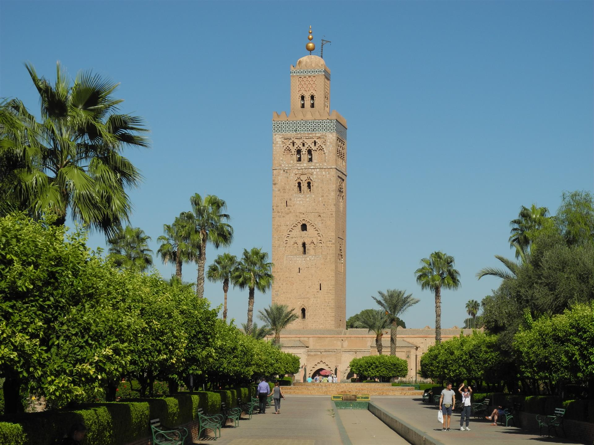
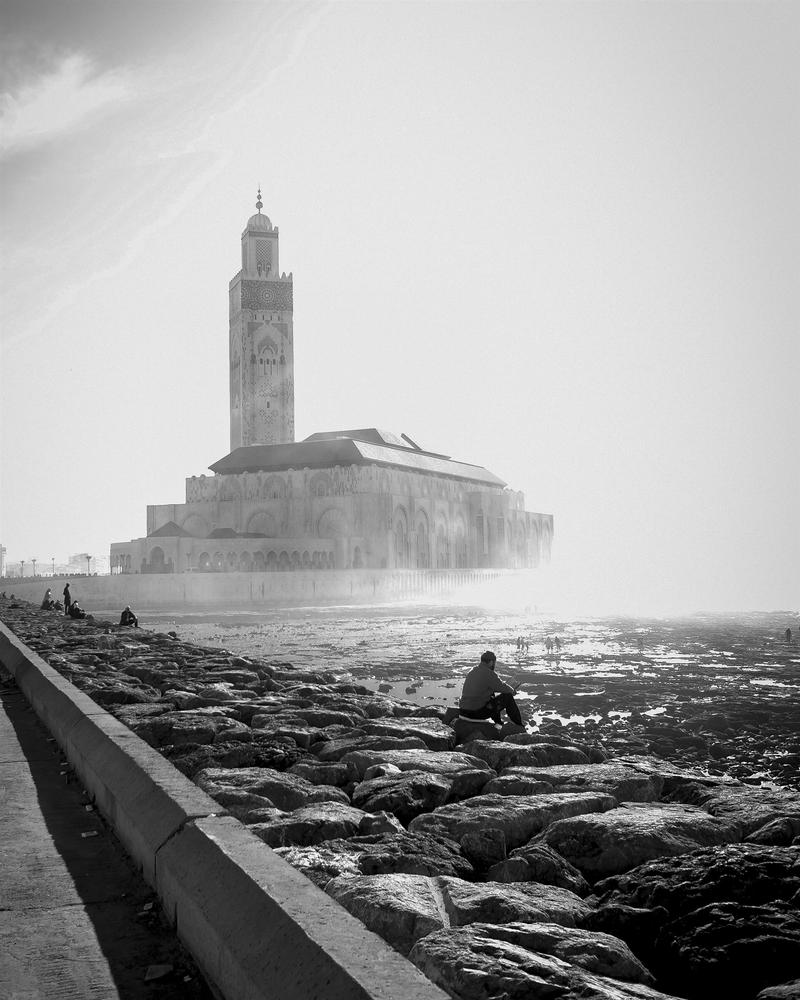
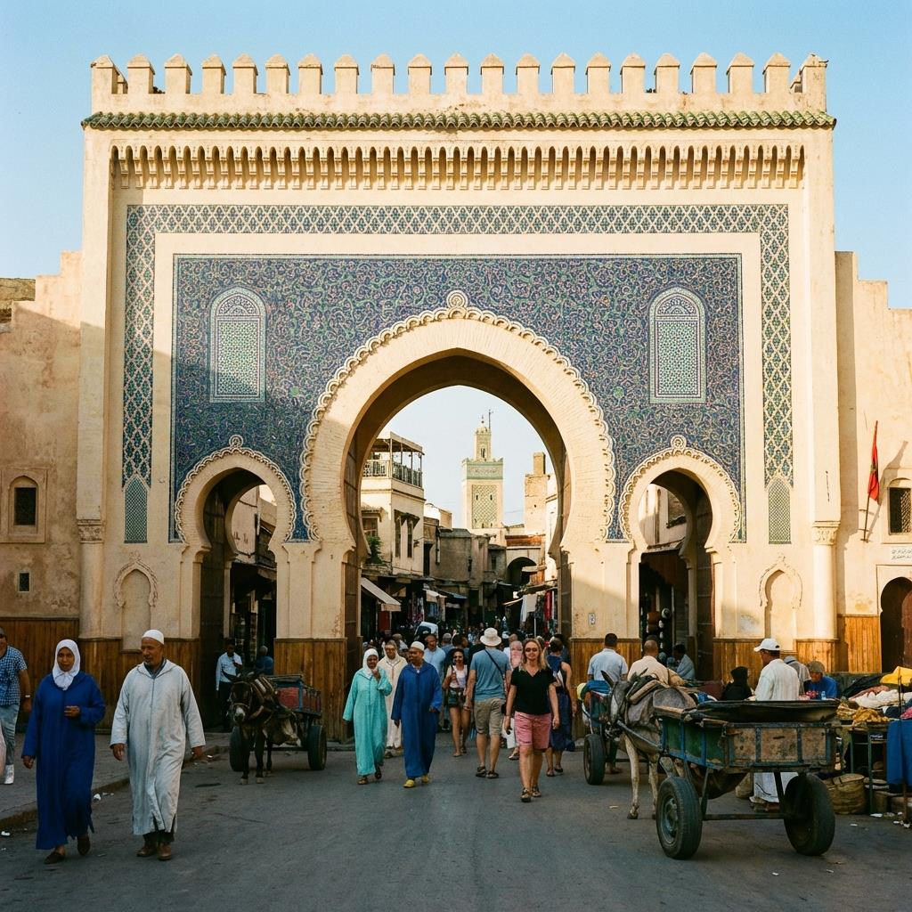
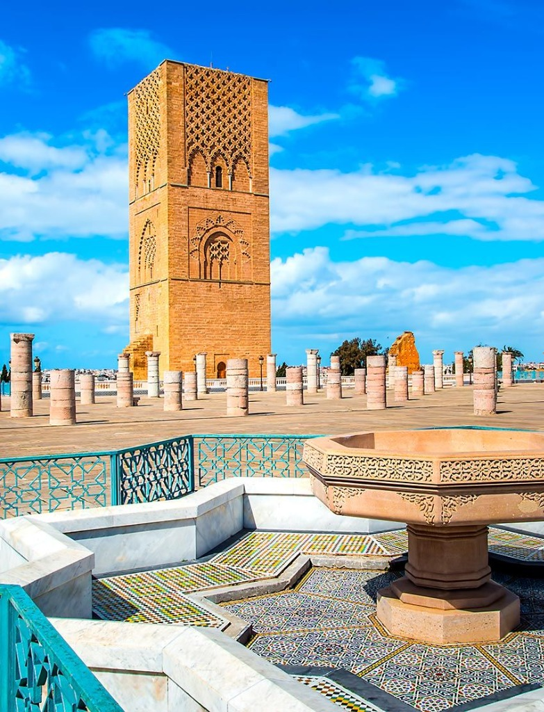
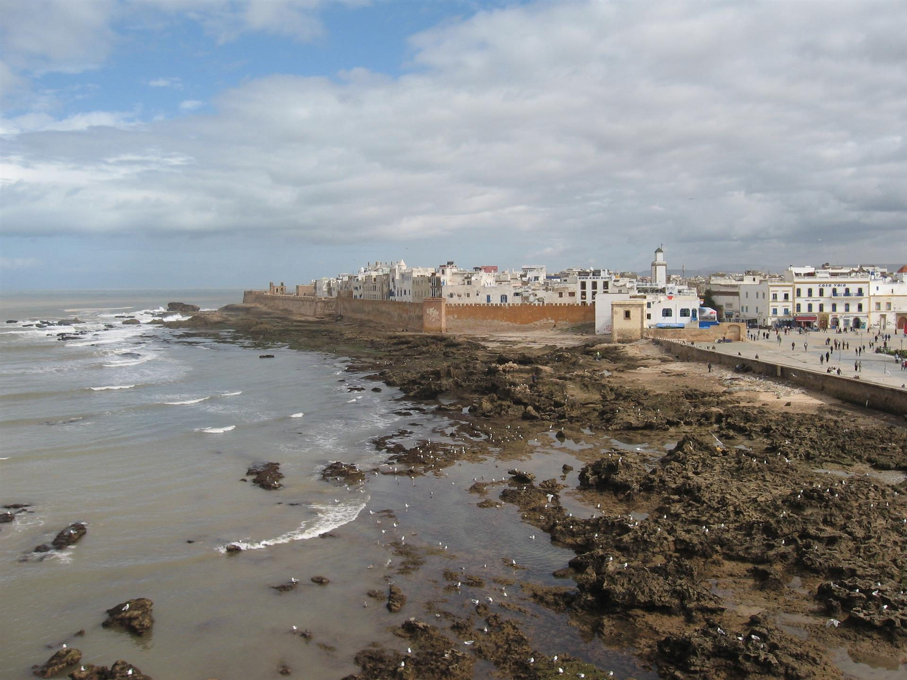
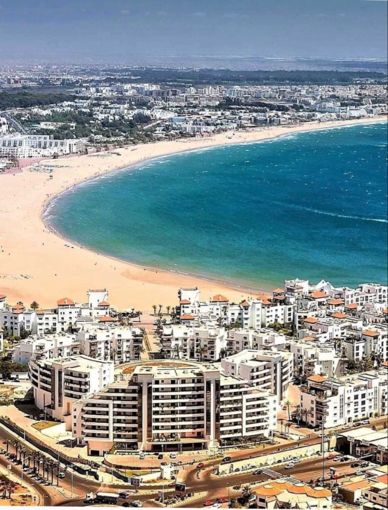

Transferts privés et services de chauffeur dans tout le Royaume. Que vous ayez besoin d'un transfert aéroport, d'un voyage inter-villes ou d'un circuit personnalisé.

Découvrez la Ville Rouge avec un confort ultime. Notre service de chauffeur privé Marrakech vous assure de naviguer dans les rues animées en toute sérénité. Que vous arriviez à l'aéroport de Ménara ou que vous vous rendiez dans un riad de luxe dans la Médina, nos chauffeurs assurent un voyage ponctuel et sûr.
Nous proposons des transferts aéroport de Marrakech sur mesure, des excursions d'une journée dans les montagnes de l'Atlas et des transferts inter-villes. Profitez de la flexibilité d'avoir un véhicule dédié à votre disposition pour le shopping, les repas ou l'exploration du Jardin Majorelle. Choisissez notre transport de luxe à Marrakech pour une expérience de voyage élégante et sans stress.

En tant que centre économique du Maroc, Casablanca exige efficacité et style. Notre service de chauffeur privé Casablanca est parfaitement adapté aux voyageurs d'affaires et aux touristes. Nous sommes spécialisés dans les transferts aéroport de Casablanca fiables de l'Aéroport International Mohammed V (CMN) vers votre hôtel ou vos réunions d'affaires.
Évitez les tracas des taxis et parcourez les avenues animées de la ville dans un véhicule climatisé de qualité supérieure. Que vous ayez besoin d'un transport d'affaires à Casablanca pour une journée de réunions ou d'un transfert vers Rabat ou Marrakech, nos chauffeurs professionnels garantissent ponctualité et discrétion.

Plongez dans l'histoire de la capitale culturelle. Nos chauffeurs connaissent les meilleurs accès à la Médina et les sites historiques incontournables.

Visitez la capitale politique du Maroc avec élégance. Notre chauffeur privé Rabat offre un transport exécutif pour diplomates, officiels et voyageurs de loisirs.
Porte d'entrée vers l'Afrique, Tanger est un mélange vibrant de cultures. Notre chauffeur privé Tanger vous accueille directement au port ou à l'aéroport Ibn Battouta.

Profitez de l'ambiance décontractée de la côte atlantique. Notre chauffeur privé Essaouira vous connecte facilement à Marrakech et Agadir.

Soleil et détente garantis. Notre service de chauffeur privé Agadir propose des transferts aéroport d'Agadir sans faille vers votre complexe hôtelier. Évitez les bus de transfert et commencez vos vacances immédiatement.
Nous sommes spécialisés dans le transport touristique à Agadir, proposant des excursions vers la Vallée du Paradis, Taghazout ou des transferts longue distance vers Marrakech. Voyagez dans un confort climatisé adapté au climat chaud du sud.
Une aventure épique vers Merzouga ou Zagora. Nos chauffeurs expérimentés vous guident à travers les dunes en toute sécurité. Voyagez dans le confort de nos véhicules 4x4 ou vans de luxe parfaitement équipés pour les routes désertiques.
Nos circuits dans le désert marocain avec chauffeur privé sont conçus pour votre confort. Nous gérons le long trajet depuis Marrakech ou Fès, vous permettant de vous concentrer sur les paysages époustouflants. Vivez un circuit de luxe dans le désert avec des nuitées dans des camps haut de gamme.
Le Maroc est un pays aux paysages diversifiés, mieux exploré sur la route. Nous sommes spécialisés dans les transferts privés longue distance entre toutes les grandes villes. Que vous ayez besoin de voyager de Marrakech ↔ Fès, de vous déplacer entre Casablanca ↔ Marrakech, de partir à l'aventure de Marrakech ↔ Merzouga, ou de relier le nord avec Rabat ↔ Tanger, notre flotte assure un voyage confortable, sûr et panoramique de porte à porte.